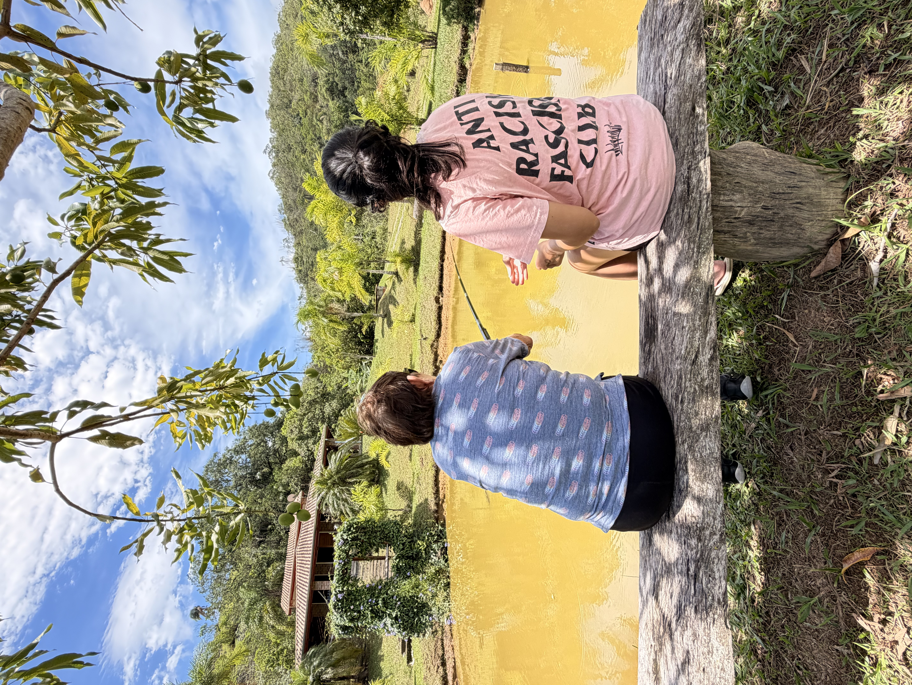
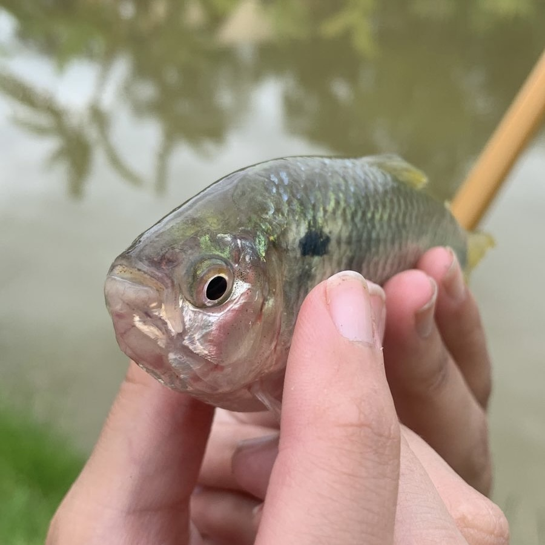

Início / Aprenda / Técnicas de pesca
GUIA 03 · EDIÇÃO PESQUEIROS
Técnicas de pesca
Algumas dicas simples ajudam na hora de escolher o lugar, a isca e cuidar do peixe.

UM PASSO DE CADA VEZ
01 Observe o lago
02 Escolha a isca
03 Ajuste a montagem
04 Capture e solte com cuidado
01 · LEITURA DO AMBIENTE
Observe o lago antes de pescar
Antes de lançar a linha, observe o lago. Nem sempre o melhor lugar é o mais distante.
Sombras e vegetação
Áreas com sombra e plantas podem atrair peixes. Só tome cuidado com obstáculos e locais proibidos.
Movimento da água
Repare no movimento dos peixes e da água. Isso pode ajudar a escolher onde pescar.
Escolha um lugar seguro
Procure um lugar firme, com espaço para arremessar sem atrapalhar outras pessoas.
02 · APRESENTAÇÃO DO ALIMENTO
Escolha a isca com atenção
Cada peixe pode preferir uma isca diferente. Veja o que é permitido no pesqueiro e teste com calma.
Massas e rações
Massas e rações são comuns na pesca de tilápias e tambaquis. Confira se são permitidas no local.
Iscas naturais
Minhocas e frutas podem atrair espécies diferentes. Pergunte à equipe quais iscas podem ser usadas.
Iscas artificiais
Imitam pequenos animais e atraem os peixes pelo movimento. Nem todo pesqueiro permite seu uso.
03 · SIMPLICIDADE ANTES DE COMPLEXIDADE
Conheça as formas de montar a linha
A montagem muda conforme a isca e o peixe. Se estiver começando, peça ajuda para fazer os nós.
| APRESENTAÇÃO | QUANDO FAZ SENTIDO | O QUE OBSERVAR |
|---|---|---|
| Com boia | Mantém a isca na profundidade escolhida e ajuda a perceber quando o peixe morde. | Ajuste a altura da boia e confira se ela combina com a montagem. |
| No fundo | Deixa a isca perto do fundo, onde algumas espécies procuram comida. | Use apenas o peso necessário e fique atento aos obstáculos. |
| Na superfície | Deixa a isca flutuando para peixes que se alimentam perto da superfície. | Observe o vento e o movimento da isca. Nem todo peixe na superfície está procurando comida. |
04 · A PESCARIA NÃO TERMINA NA FISGADA
Cuide do peixe depois da fisgada
Depois da fisgada, evite puxões fortes. Se precisar, chame a equipe para ajudar a retirar e soltar o peixe.

Mãos molhadas
Molhe as mãos antes de tocar no peixe e evite colocá-lo no chão seco.
Corpo bem apoiado
Apoie o corpo do peixe com cuidado. Não segure pelas guelras ou pelos olhos.
Menos tempo fora d’água
Deixe o alicate por perto e devolva o peixe à água o mais rápido possível, com cuidado.
Na dúvida, peça ajuda
Respeite as regras do pesqueiro. Com peixes grandes ou anzóis difíceis de retirar, chame a equipe em vez de tentar resolver sozinho.